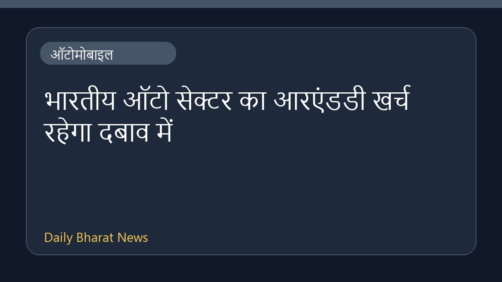

भारतीय ऑटो सेक्टर का आरएंडडी खर्च रहेगा दबाव में

कोटक की रिपोर्ट के अनुसार, चीनी प्रतिस्पर्धा और इलेक्ट्रिक वाहनों को धीमी गति से अपनाने के कारण भारत में ऑटोमोबाइल अनुसंधान और विकास (आरएंडडी) पर होने वाला खर्च दबाव में रह सकता है। इस स्थिति से वाहन निर्माताओं की रणनीतियों पर असर पड़ने की संभावना है, क्योंकि बाजार में चुनौतियां बनी हुई हैं और बाजार की मांग में बदलाव आ रहा है।
मूल स्रोत: Automobile News Sources
Chinese competition, slower EV adoption to keep India's auto R&D spending under pressure: Kotak - BusinessLine ↗
Chinese competition, slower EV adoption to keep India's auto R&D spending under pressure: Kotak - BusinessLine ↗